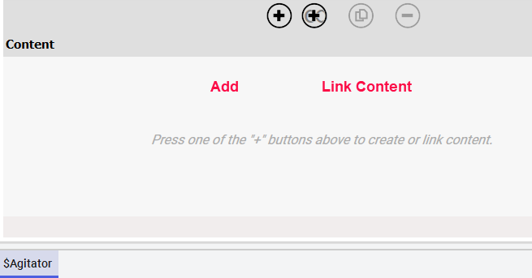

Module 3 — Industrial Graphics | Pages 183-186
Section 3 – Industrial Graphics with Objects
Section 3 – Industrial Graphics with Objects
Introduction
When adding symbols into an automation object, you can create symbols within the object and
then embed symbols from the Graphics tab into those symbols. Alternatively, you can use the
linked symbols feature, whereby you directly link external symbols from the Graphics tab to the
automation object.
When adding a symbol or linking an external symbol in a template object, the symbol in the
template will be propagated to all derived objects. The symbols inherited from the template object
cannot be removed.
Linked Symbols vs. Added Symbols
Linking an external symbol to an automation object creates an association between the object and
a symbol in the Graphics tab. The symbol in the Graphics tab can be linked with other automation
objects, which are not necessarily part of the derivation hierarchy. Changes to the symbol from the
Graphics tab will apply to all automation objects to which this symbol is linked.
On the other hand, adding a symbol to an automation object is to create a symbol that is natively
hosted by the object. You can edit the symbol within the object, such as when you embed a symbol
from the Graphics tab and then customize it as needed for the object. When the symbol in a
template object changes, the changes will propagate to its child objects and wherever they are
referenced.
Additionally, deleting automation objects with added symbols will delete those symbols, since the
symbols only exist within the automation objects. However, deleting automation objects with linked
symbols will not delete the symbols, because the symbols still exist in the Graphics tab.
Note the following about linked symbols:
Symbols on the Graphics tab can be linked to automation objects.
Linked symbols in automation objects can be embedded into other symbols.
Changes made to a linked or embedded symbol are propagated to automation objects to
which the symbol is linked and to the graphics in which the symbol is embedded.
Relative references used in a linked symbol will be resolved through the object to which it
is linked.
Some limitations of using linked symbols are:
Custom properties in a linked symbol cannot be customized directly.
Only symbols from the Graphics tab can be linked to an object.
This section describes using and managing symbols with automation objects.

Manage Symbols from the Object Editor
When editing an object in the Object Editor, you can link external symbols or add symbols to the
object from the Content pane on the Attributes tab.
Add: Clicking the Add button adds an empty symbol to the object, which can be edited in
the Graphic Editor.
Link Content: Clicking the Link Content button opens the Galaxy Browser, allowing you to
browse for and select the symbol from the Graphics tab to link.
From within the Object Editor, you can change the names of symbols, add or edit the descriptions
for the symbols, duplicate the symbols, and delete the symbols. To edit a symbol, you can double-
click the symbol listed in the Object Editor or click the Edit button to open the Graphic Editor.
For linked symbols, you can open them from the Graphics tab for editing, instead of opening them
from the Object Editor.
Section 3 – Industrial Graphics with Objects
Relative References
References that go up the object hierarchy to parent objects are called relative references.
Relative references, such as “Me” and “MyArea” are valid reference strings. The following relative
references refer to the current object:
Me
MyArea
MyContainer
MyEngine
MyHost
MyPlatform
Relative references can be used to configure symbols, and when the symbols are used in objects,
those relative references are resolved by the objects.
Containment Relationships
Application objects can be included in a containment relationship. When working in a containment
relationship, symbols in each object can be embedded in other objects within the same
containment by using relative references. In this way, the relative references within the embedded
symbols will be resolved without further configuration.
For example, if a contained object includes a symbol that is configured using relative references
(such as Me.PV), the symbol can be embedded in a symbol of the container object.
At the template level of containment, if the container template needs to include symbols from its
contained templates, then you must add a symbol in the container template and embed the
symbols from the contained templates through relative referencing.
Review the key concepts section above for the core topics discussed.
Consider how the concepts in this lesson fit into the broader System Platform and OMI framework.